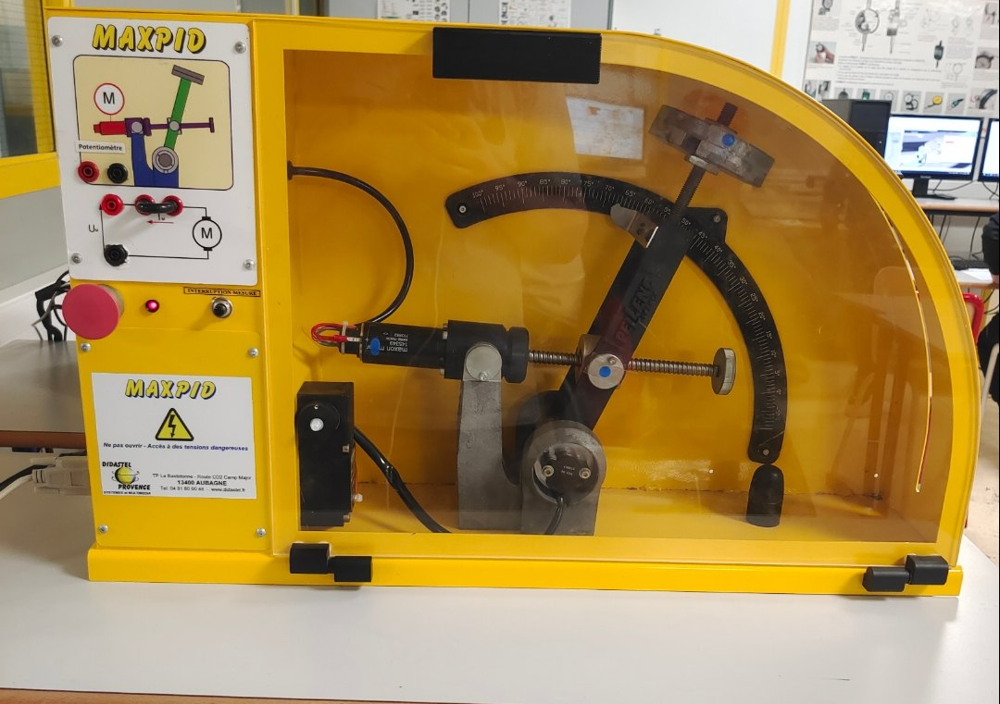
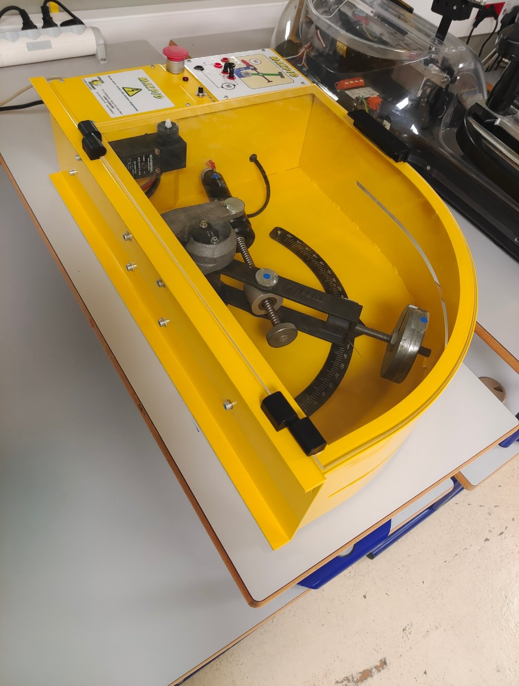
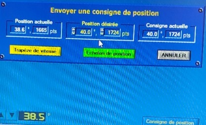

Démo · CPGE TSI, sciences de l'ingénieur (2024)



Mes photos du banc du lycée (novembre 2024). La démo ci-dessous en reprend la cinématique, le moteur et la boucle fermée.
loi exacte θ(β)formule arrondie (tableau du TP)droite des moindres carrésma droite de tableur 2024
vitesse Ω (rad/s)courant i (mA)0 à 0,5 s, valeurs de la fiche
fiche du moteurmon modèle Simscape de 2024vitesse sur 10 s
angle θ (°)consignetension U (V ×5)